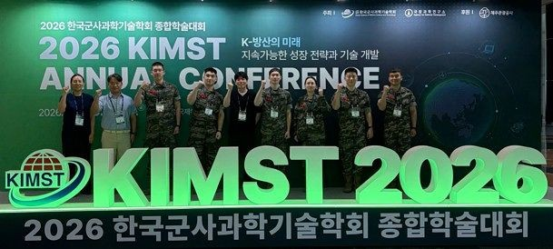

Small Language Model-Based Risk Classification of Coastal Surveillance Events
Seon Hong Lee, Wonseok Choi, Woojoon Lee, Yuchan Kim. Korea Institute of Military Science and Technology (KIMST) Annual Conference, 2026.
- Year
- 2026
- Venue
- Korea Institute of Military Science and Technology (KIMST) Annual Conference
- Keywords
- Small Language Model, PEFT, QLoRA, Coastal Surveillance, Classification
Abstract
This study proposes an SLM-based model for classifying coastal surveillance events and generating brief situation reports. A dataset of 926 generalized event samples was constructed and split into training, validation, and test dataset. The QLoRA-based PEFT model outperformed the baseline model, demonstrating its potential for automated risk detection and reporting.
Method
- Built 926 instruction-format samples (471 risk, 455 normal), each with a risk label and a short situation report. Data was generalized to exclude classified or sensitive information and reviewed by Marine Corps personnel.
- Split the data 8:1:1 into training, validation and test sets.
- Evaluated
kanana-1.5-2.1b-instruct-2505as the baseline without extra training, then fine-tuned it with QLoRA and compared both on the same test set.
Results
| Model | Accuracy | Macro precision | Macro recall | Macro F1 |
|---|---|---|---|---|
| Baseline | 0.6344 | 0.7311 | 0.6444 | 0.6007 |
| PEFT (QLoRA) | 0.9462 | 0.9466 | 0.9458 | 0.9461 |
In the News
- Hanyang University ERICA and ROK Marine Corps present AI education results at the KIMST conference · JoongAng Ilbo, Jun 24, 2026 (in Korean). Covers the military–academic AI education program behind this paper and the team’s presentation at the conference on June 10–12, 2026.
